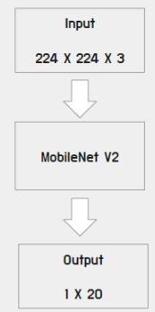
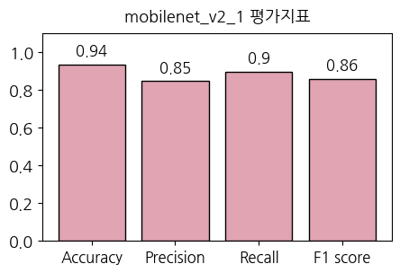
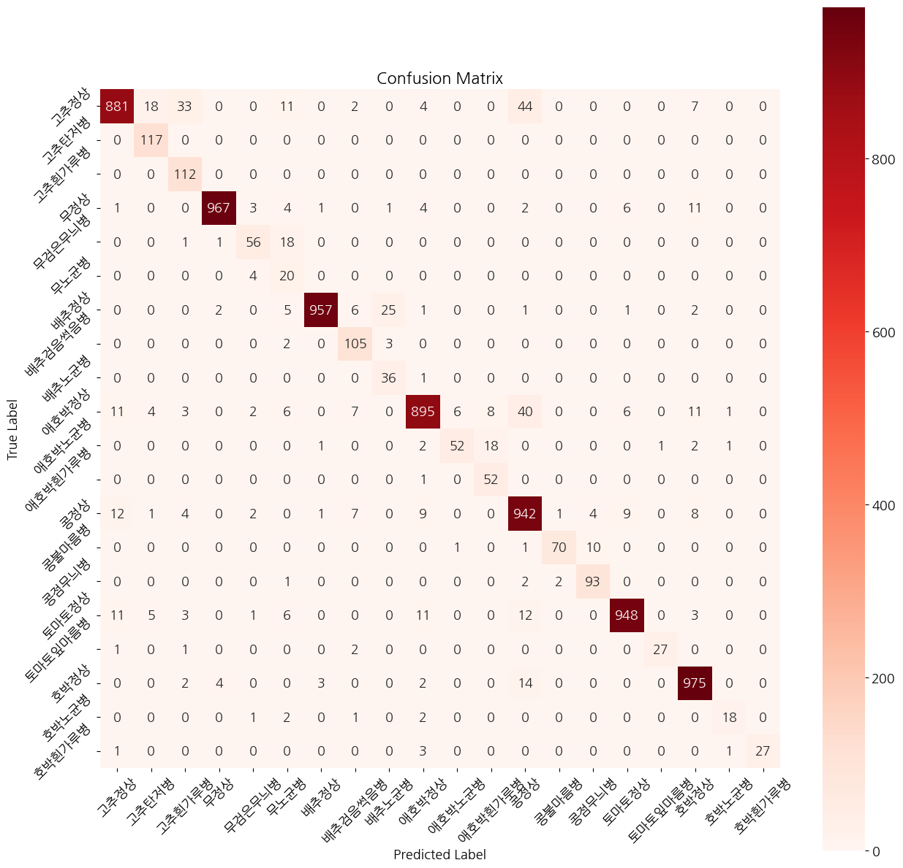
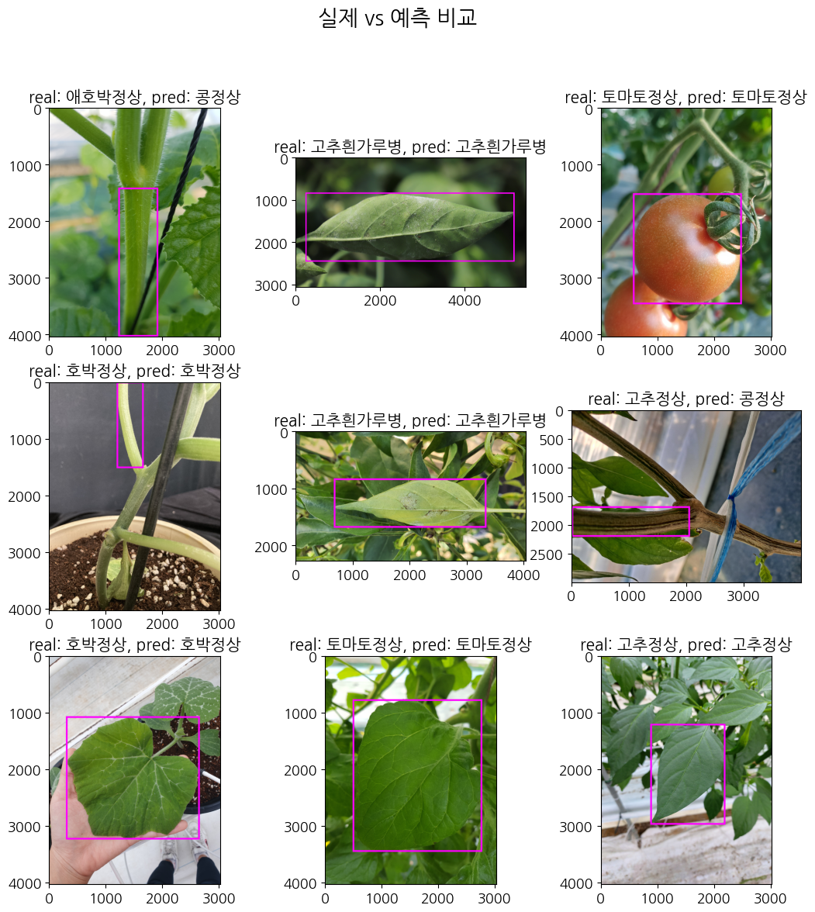
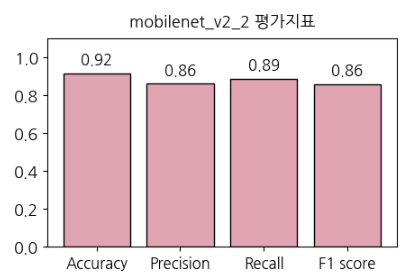
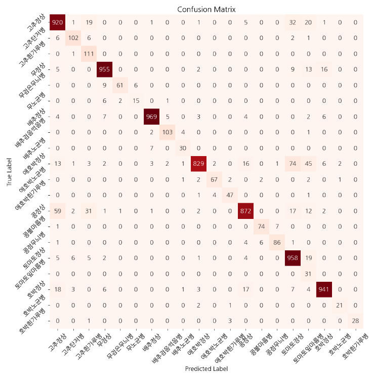
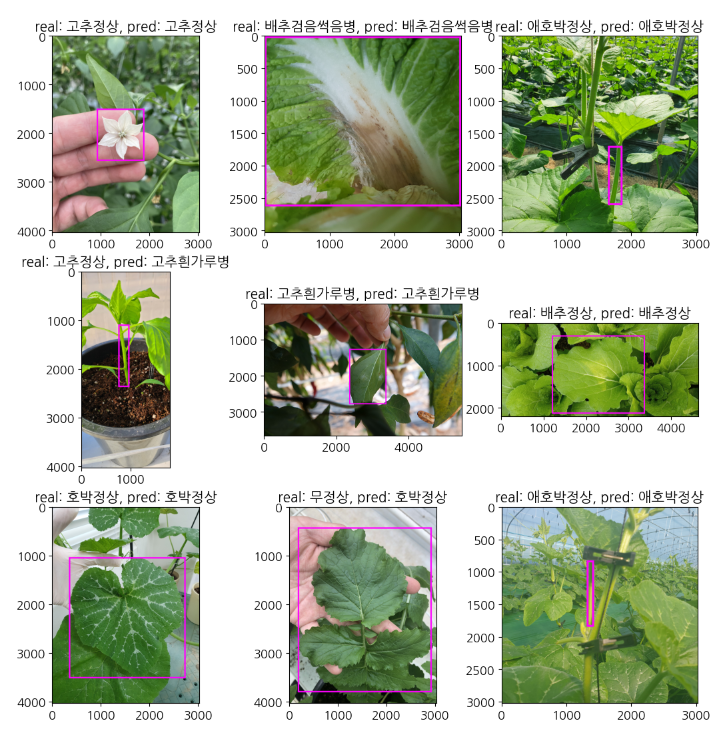

import pickle
import os
from tqdm import tqdm
import random
import time
from PIL import Image, ImageDraw, ImageFile
import albumentations
import matplotlib.pyplot as plt
plt.rc("font", family="NanumGothic", size=13)
import warnings
warnings.filterwarnings('ignore')
from sklearn.metrics import confusion_matrix, accuracy_score, precision_score, recall_score, f1_score
import numpy as np
import torch
import torch.nn as nn
import torchvision.models as models
from torchsummary import summary
import torch.nn as nn
import torch.optim as optim
import torchvision.transforms as transforms
import torchvision.datasets as datasets
from torchvision.datasets import ImageFolder
from torch.utils.data import DataLoader
from torch.utils.tensorboard import SummaryWriter
from torch.utils.data.sampler import WeightedRandomSampler
import torchvision.transforms as transforms
ImageFile.LOAD_TRUNCATED_IMAGES = True🪴 [cropdoctor] 인공지능 기반 웹서비스 개발 프로젝트
3. 작물 질병 진단 모델 학습 및 평가 (mobilenetV2)
01. 모델 학습
이번 글에서는 노지작물의 질병을 진단하는 모델을 학습합니다. 이번 글에서는 베이스라인 모델로, Image Classification 방법을 사용합니다. 그 다음, 사용하는 데이터셋의 라벨 데이터에 바운딩 박스가 포함되어 있으므로, Object Detection 모델 또한 학습해 볼 예정입니다.
먼저, Image Classification 전이학습을 진행하며, 사전학습 모델은 mobilenet v2을 사용합니다. mobilenet V2는 경량화된 아키텍처로, 파라미터 수를 줄이고 연산량을 최적화된 모델입니다. 작은 모델 크기와 적은 연산 요구로 제한된 자원을 가진 환경에서도 효율적으로 실행될 수 있습니다. 작은 모델 크기와 낮은 연산 요구를 유지하면서도 정확한 예측 결과를 얻을 수 있으므로, 프로젝트에서 제공받은 VM의 성능에서 무리 없이 돌아가게 하면서도, 높은 분류 성능을 제공해주므로 해당 모델을 선정하였습니다.
시간이나 용량 등 물리적 자원이 여유로웠다면 ImageNet의 여러 모델로 학습시켜 성능을 비교해보고 싶었지만, 그럴만한 여유는 없었기에 mobilenet V2 모델로 간단한 파라미터 조정을 통한 비교만 진행합니다.

위의 도식화 사진과 같이, 이미지의 input 사이즈는 (224, 224, 3)으로 두었고, output은 우리 데이터 레이블 개수에 맞게 (1, 20)으로 설정하여 모델을 구성하였습니다.
모델 학습 코드
mobilenetV2_1.py
# Device 정의
device = torch.device("cuda" if torch.cuda.is_available() else "cpu")
# 하이퍼 파라미터 정의
num_classes = 20
batch_size = 64
learning_rate = 0.001
num_epochs = 10
# 사전학습된 mobilenet V2 불러오기
model = torch.hub.load('pytorch/vision:v0.9.0', 'mobilenet_v2', pretrained=True)
# 마지막 FC 레이어를 우리 데이터셋에 맞게 조정해주기
num_ftrs = model.classifier[-1].in_features
model.classifier[-1] = nn.Linear(num_ftrs, num_classes)
model = model.to(device)
# loss function 과 optimizer 를 설정
criterion = nn.CrossEntropyLoss()
optimizer = optim.Adam(model.parameters(), lr=learning_rate)
# 입력 이미지 데이터셋 전처리 (사이즈 224, 224, tensor 타입 변경, 스케일 표준화)
data_transforms = transforms.Compose([
transforms.Resize((224, 224)),
transforms.ToTensor(),
transforms.Normalize(mean=[0.485, 0.456, 0.406], std=[0.229, 0.224, 0.225])
])
# 데이터셋 경로 설정 및 데이터셋 불러오기
path_train_img = "data/training/image_class/"
path_valid_img = "data/validation/image_class/"
train_dataset = ImageFolder(root=path_train_img, transform=data_transforms) # 데이터 증강 O
test_dataset = ImageFolder(root=path_valid_img, transform=data_transforms) # test_dataset -> val_dataset, 데이터 증강 X
train_loader = DataLoader(dataset=train_dataset, batch_size=batch_size, shuffle=True)
test_loader = DataLoader(dataset=test_dataset, batch_size=1, shuffle=True) # test -> val, batch = 1
# TensorBoard writer를 통해 학습과정을 시각화해보기
writer = SummaryWriter()
# 모델 학습
total_step = len(train_loader)
start_time = time.time()
for epoch in range(num_epochs):
model.train() # 학습 모드로 설정
for i, (images, labels) in tqdm(enumerate(train_loader), total=len(train_loader), leave=False):
images = images.to(device)
labels = labels.to(device)
# 순전파
outputs = model(images)
loss = criterion(outputs, labels)
# 역전파 및 optimize
optimizer.zero_grad()
loss.backward()
optimizer.step()
# TensorBoard에서 accuracy 와 loss 추적
_, predicted = torch.max(outputs.data, 1)
total = labels.size(0)
correct = (predicted == labels).sum().item()
acc = 100 * correct / total
writer.add_scalar('Train/Loss', loss.item(), epoch * total_step + i)
writer.add_scalar('Train/Accuracy', acc, epoch * total_step + i)
writer.flush()
model.eval() # 평가 모드로 설정
# validation 데이터셋으로 모델 평가하기
with torch.no_grad():
correct = 0
total = 0
for i, (images, labels) in tqdm(enumerate(test_loader), total=len(test_loader), leave=False):
images = images.to(device)
labels = labels.to(device)
outputs = model(images)
_, predicted = torch.max(outputs.data, 1)
total += labels.size(0)
correct += (predicted == labels).sum().item()
test_acc = 100 * correct / total
writer.add_scalar('Test/Accuracy', test_acc, epoch)
writer.flush()
print(f'Epoch [{epoch+1}/{num_epochs}], Loss: {loss.item():.4f}, Training Accuracy: {acc:.2f}%, Test Accuracy: {test_acc:.2f}%')
end_time = time.time()
print(f'Training complete in {(end_time - start_time):.0f} seconds')
# 모델 정보가 담긴 가중치 파일을 ckpt 확장자로 저장
torch.save(model.state_dict(), 'model/mobilenet_v2_1.ckpt')
print('Model saved as mobilenet_v2_1.ckpt')
# Tensorboard writer 종료
writer.close()💡 tmux 사용
제공받은 VM 환경에서 1 epoch 당 약 1시간 정도의 시간이 걸렸습니다. 10 epoch만 돌려도 10시간 이상이 걸렸기에, 서버가 재부팅되지 않는 이상 학습 중인 세션이 종료되지 않을 수 있는 tmux를 사용하여 모델학습을 진행하였습니다.
1. 설치
sudo apt-get install tmux
2. 세션 시작
tmux new -s NAME
위와 같이 tmux 세션을 시작합니다.
3. 모델 학습 실행
python mobilenetV2_1.py
시작된 tmux 세션 안의 터미널에서 위의 명령어로 모델 학습을 진행시켰습니다.
02. 모델 평가
이름 변환 딕셔너리
disease2name_new = {
0: "고추정상",
1: "고추탄저병",
2: "고추흰가루병",
3: "무정상",
4: "무검은무늬병",
5: "무노균병",
6: "배추정상",
7: "배추검음썩음병",
8: "배추노균병",
9: "애호박정상",
10: "애호박노균병",
11: "애호박흰가루병",
12: "콩정상",
13: "콩불마름병",
14: "콩점무늬병",
15: "토마토정상",
16: "토마토잎마름병",
17: "호박정상",
18: "호박노균병",
19: "호박흰가루병"}
lst_label_name = ["고추정상", "고추탄저병", "고추흰가루병",
"무정상", "무검은무늬병", "무노균병",
"배추정상", "배추검음썩음병", "배추노균병",
"애호박정상", "애호박노균병", "애호박흰가루병",
"콩정상", "콩불마름병", "콩점무늬병",
"토마토정상", "토마토잎마름병",
"호박정상", "호박노균병", "호박흰가루병"]모델 요약
model_path = "model/mobilenet_v2_1.ckpt"
device = torch.device("cuda" if torch.cuda.is_available() else "cpu")
model_weights = torch.load(model_path, map_location=device)학습하여 저장된 ckpt 가중치 파일을 불러옵니다.
모델 생성
model = torch.hub.load('pytorch/vision:v0.9.0', 'mobilenet_v2', pretrained=False)
num_ftrs = model.classifier[-1].in_features
model.classifier[-1] = nn.Linear(num_ftrs, 20)
model.load_state_dict(model_weights)
model = model.to(device)Using cache found in /home/elicer/.cache/torch/hub/pytorch_vision_v0.9.0불러온 모델의 가중치 파일을 학습한 모델 구조에 맞게 불러옵니다.
모델 요약
summary(model, input_size=(3, 224, 224))----------------------------------------------------------------
Layer (type) Output Shape Param #
================================================================
Conv2d-1 [-1, 32, 112, 112] 864
BatchNorm2d-2 [-1, 32, 112, 112] 64
ReLU6-3 [-1, 32, 112, 112] 0
Conv2d-4 [-1, 32, 112, 112] 288
BatchNorm2d-5 [-1, 32, 112, 112] 64
ReLU6-6 [-1, 32, 112, 112] 0
Conv2d-7 [-1, 16, 112, 112] 512
BatchNorm2d-8 [-1, 16, 112, 112] 32
InvertedResidual-9 [-1, 16, 112, 112] 0
Conv2d-10 [-1, 96, 112, 112] 1,536
BatchNorm2d-11 [-1, 96, 112, 112] 192
ReLU6-12 [-1, 96, 112, 112] 0
Conv2d-13 [-1, 96, 56, 56] 864
BatchNorm2d-14 [-1, 96, 56, 56] 192
ReLU6-15 [-1, 96, 56, 56] 0
Conv2d-16 [-1, 24, 56, 56] 2,304
BatchNorm2d-17 [-1, 24, 56, 56] 48
InvertedResidual-18 [-1, 24, 56, 56] 0
Conv2d-19 [-1, 144, 56, 56] 3,456
BatchNorm2d-20 [-1, 144, 56, 56] 288
ReLU6-21 [-1, 144, 56, 56] 0
Conv2d-22 [-1, 144, 56, 56] 1,296
BatchNorm2d-23 [-1, 144, 56, 56] 288
ReLU6-24 [-1, 144, 56, 56] 0
Conv2d-25 [-1, 24, 56, 56] 3,456
BatchNorm2d-26 [-1, 24, 56, 56] 48
InvertedResidual-27 [-1, 24, 56, 56] 0
Conv2d-28 [-1, 144, 56, 56] 3,456
BatchNorm2d-29 [-1, 144, 56, 56] 288
ReLU6-30 [-1, 144, 56, 56] 0
Conv2d-31 [-1, 144, 28, 28] 1,296
BatchNorm2d-32 [-1, 144, 28, 28] 288
ReLU6-33 [-1, 144, 28, 28] 0
Conv2d-34 [-1, 32, 28, 28] 4,608
BatchNorm2d-35 [-1, 32, 28, 28] 64
InvertedResidual-36 [-1, 32, 28, 28] 0
Conv2d-37 [-1, 192, 28, 28] 6,144
BatchNorm2d-38 [-1, 192, 28, 28] 384
ReLU6-39 [-1, 192, 28, 28] 0
Conv2d-40 [-1, 192, 28, 28] 1,728
BatchNorm2d-41 [-1, 192, 28, 28] 384
ReLU6-42 [-1, 192, 28, 28] 0
Conv2d-43 [-1, 32, 28, 28] 6,144
BatchNorm2d-44 [-1, 32, 28, 28] 64
InvertedResidual-45 [-1, 32, 28, 28] 0
Conv2d-46 [-1, 192, 28, 28] 6,144
BatchNorm2d-47 [-1, 192, 28, 28] 384
ReLU6-48 [-1, 192, 28, 28] 0
Conv2d-49 [-1, 192, 28, 28] 1,728
BatchNorm2d-50 [-1, 192, 28, 28] 384
ReLU6-51 [-1, 192, 28, 28] 0
Conv2d-52 [-1, 32, 28, 28] 6,144
BatchNorm2d-53 [-1, 32, 28, 28] 64
InvertedResidual-54 [-1, 32, 28, 28] 0
Conv2d-55 [-1, 192, 28, 28] 6,144
BatchNorm2d-56 [-1, 192, 28, 28] 384
ReLU6-57 [-1, 192, 28, 28] 0
Conv2d-58 [-1, 192, 14, 14] 1,728
BatchNorm2d-59 [-1, 192, 14, 14] 384
ReLU6-60 [-1, 192, 14, 14] 0
Conv2d-61 [-1, 64, 14, 14] 12,288
BatchNorm2d-62 [-1, 64, 14, 14] 128
InvertedResidual-63 [-1, 64, 14, 14] 0
Conv2d-64 [-1, 384, 14, 14] 24,576
BatchNorm2d-65 [-1, 384, 14, 14] 768
ReLU6-66 [-1, 384, 14, 14] 0
Conv2d-67 [-1, 384, 14, 14] 3,456
BatchNorm2d-68 [-1, 384, 14, 14] 768
ReLU6-69 [-1, 384, 14, 14] 0
Conv2d-70 [-1, 64, 14, 14] 24,576
BatchNorm2d-71 [-1, 64, 14, 14] 128
InvertedResidual-72 [-1, 64, 14, 14] 0
Conv2d-73 [-1, 384, 14, 14] 24,576
BatchNorm2d-74 [-1, 384, 14, 14] 768
ReLU6-75 [-1, 384, 14, 14] 0
Conv2d-76 [-1, 384, 14, 14] 3,456
BatchNorm2d-77 [-1, 384, 14, 14] 768
ReLU6-78 [-1, 384, 14, 14] 0
Conv2d-79 [-1, 64, 14, 14] 24,576
BatchNorm2d-80 [-1, 64, 14, 14] 128
InvertedResidual-81 [-1, 64, 14, 14] 0
Conv2d-82 [-1, 384, 14, 14] 24,576
BatchNorm2d-83 [-1, 384, 14, 14] 768
ReLU6-84 [-1, 384, 14, 14] 0
Conv2d-85 [-1, 384, 14, 14] 3,456
BatchNorm2d-86 [-1, 384, 14, 14] 768
ReLU6-87 [-1, 384, 14, 14] 0
Conv2d-88 [-1, 64, 14, 14] 24,576
BatchNorm2d-89 [-1, 64, 14, 14] 128
InvertedResidual-90 [-1, 64, 14, 14] 0
Conv2d-91 [-1, 384, 14, 14] 24,576
BatchNorm2d-92 [-1, 384, 14, 14] 768
ReLU6-93 [-1, 384, 14, 14] 0
Conv2d-94 [-1, 384, 14, 14] 3,456
BatchNorm2d-95 [-1, 384, 14, 14] 768
ReLU6-96 [-1, 384, 14, 14] 0
Conv2d-97 [-1, 96, 14, 14] 36,864
BatchNorm2d-98 [-1, 96, 14, 14] 192
InvertedResidual-99 [-1, 96, 14, 14] 0
Conv2d-100 [-1, 576, 14, 14] 55,296
BatchNorm2d-101 [-1, 576, 14, 14] 1,152
ReLU6-102 [-1, 576, 14, 14] 0
Conv2d-103 [-1, 576, 14, 14] 5,184
BatchNorm2d-104 [-1, 576, 14, 14] 1,152
ReLU6-105 [-1, 576, 14, 14] 0
Conv2d-106 [-1, 96, 14, 14] 55,296
BatchNorm2d-107 [-1, 96, 14, 14] 192
InvertedResidual-108 [-1, 96, 14, 14] 0
Conv2d-109 [-1, 576, 14, 14] 55,296
BatchNorm2d-110 [-1, 576, 14, 14] 1,152
ReLU6-111 [-1, 576, 14, 14] 0
Conv2d-112 [-1, 576, 14, 14] 5,184
BatchNorm2d-113 [-1, 576, 14, 14] 1,152
ReLU6-114 [-1, 576, 14, 14] 0
Conv2d-115 [-1, 96, 14, 14] 55,296
BatchNorm2d-116 [-1, 96, 14, 14] 192
InvertedResidual-117 [-1, 96, 14, 14] 0
Conv2d-118 [-1, 576, 14, 14] 55,296
BatchNorm2d-119 [-1, 576, 14, 14] 1,152
ReLU6-120 [-1, 576, 14, 14] 0
Conv2d-121 [-1, 576, 7, 7] 5,184
BatchNorm2d-122 [-1, 576, 7, 7] 1,152
ReLU6-123 [-1, 576, 7, 7] 0
Conv2d-124 [-1, 160, 7, 7] 92,160
BatchNorm2d-125 [-1, 160, 7, 7] 320
InvertedResidual-126 [-1, 160, 7, 7] 0
Conv2d-127 [-1, 960, 7, 7] 153,600
BatchNorm2d-128 [-1, 960, 7, 7] 1,920
ReLU6-129 [-1, 960, 7, 7] 0
Conv2d-130 [-1, 960, 7, 7] 8,640
BatchNorm2d-131 [-1, 960, 7, 7] 1,920
ReLU6-132 [-1, 960, 7, 7] 0
Conv2d-133 [-1, 160, 7, 7] 153,600
BatchNorm2d-134 [-1, 160, 7, 7] 320
InvertedResidual-135 [-1, 160, 7, 7] 0
Conv2d-136 [-1, 960, 7, 7] 153,600
BatchNorm2d-137 [-1, 960, 7, 7] 1,920
ReLU6-138 [-1, 960, 7, 7] 0
Conv2d-139 [-1, 960, 7, 7] 8,640
BatchNorm2d-140 [-1, 960, 7, 7] 1,920
ReLU6-141 [-1, 960, 7, 7] 0
Conv2d-142 [-1, 160, 7, 7] 153,600
BatchNorm2d-143 [-1, 160, 7, 7] 320
InvertedResidual-144 [-1, 160, 7, 7] 0
Conv2d-145 [-1, 960, 7, 7] 153,600
BatchNorm2d-146 [-1, 960, 7, 7] 1,920
ReLU6-147 [-1, 960, 7, 7] 0
Conv2d-148 [-1, 960, 7, 7] 8,640
BatchNorm2d-149 [-1, 960, 7, 7] 1,920
ReLU6-150 [-1, 960, 7, 7] 0
Conv2d-151 [-1, 320, 7, 7] 307,200
BatchNorm2d-152 [-1, 320, 7, 7] 640
InvertedResidual-153 [-1, 320, 7, 7] 0
Conv2d-154 [-1, 1280, 7, 7] 409,600
BatchNorm2d-155 [-1, 1280, 7, 7] 2,560
ReLU6-156 [-1, 1280, 7, 7] 0
Dropout-157 [-1, 1280] 0
Linear-158 [-1, 20] 25,620
================================================================
Total params: 2,249,492
Trainable params: 2,249,492
Non-trainable params: 0
----------------------------------------------------------------
Input size (MB): 0.57
Forward/backward pass size (MB): 152.86
Params size (MB): 8.58
Estimated Total Size (MB): 162.02
----------------------------------------------------------------input이 (3, 224, 224)이고, output이 (1, 20)인 mobilenet V2 전이학습 모델의 구조임을 확인합니다.
모델 평가
모델 학습 시 에폭마다 정확도를 출력해주었는데, 해당 코드와 거의 유사합니다. 몇가지 추가된 점은, 정확도 외의 정밀도, 재현율, f1 score 지표 계산과, 혼동행렬의 시각화입니다.
데이터 로드 및 전처리
valid_transform = transforms.Compose([
transforms.Resize((224, 224)),
transforms.ToTensor(),
transforms.Normalize(mean=[0.485, 0.456, 0.406], std=[0.229, 0.224, 0.225])
])
path_valid_img = "data/validation/image_class/"
valid_dataset = ImageFolder(root=path_valid_img, transform=valid_transform)
valid_loader = DataLoader(dataset=valid_dataset, batch_size=1)학습할 때 train 데이터와 마찬가지로 224x224로 리사이징하며, 스케일을 표준화 하여 validation 이미지 데이터를 불러옵니다.
모델 예측
model.eval() # 중요
with torch.no_grad():
lst_pred = []
lst_labels = []
correct = 0
total = 0
for i, (images, labels) in tqdm(enumerate(valid_loader), total=len(valid_loader)):
images = images.to(device)
labels = labels.to(device)
outputs = model(images)
_, predicted = torch.max(outputs.data, 1)
total += labels.size(0)
correct += (predicted == labels).sum().item()
lst_pred.extend(predicted.cpu().tolist())
lst_labels.extend(labels.cpu().tolist())100%|██████████| 7873/7873 [19:50<00:00, 6.62it/s]불러온 모델과 데이터로 예측을 진행합니다. 밑에서 평가지표와 혼동행렬을 구하기 위해 예측 값과 정답값을 각각 lst_pred, lst_labels 리스트에 추가합니다.
평가 지표
# 전체 validation 데이터셋의 평가 지표 계산
accuracy = accuracy_score(lst_labels, lst_pred)
precision = precision_score(lst_labels, lst_pred, average='macro')
recall = recall_score(lst_labels, lst_pred, average='macro')
f1 = f1_score(lst_labels, lst_pred, average='macro')
print('Accuracy:', accuracy)
print('Precision:', precision)
print('Recall:', recall)
print('F1 score:', f1)
fig = plt.figure(figsize=(5, 3))
ax = fig.subplots()
bars = ax.bar(range(4), [accuracy, precision, recall, f1], color='#e0a4b2', edgecolor = 'black')
ax.set_xticks(range(4))
ax.set_xticklabels(["Accuracy", "Precision", "Recall", "F1 score"], fontsize=12)
ax.set_ylim(0, 1.1)
plt.title("mobilenet_v2_1 평가지표", fontsize=13, pad=10)
for i, b in enumerate(bars.patches):
_=plt.text(b.get_x()+b.get_width()*(1/2),b.get_height()+0.05, \
round(b.get_height(), 2),ha='center',fontsize=12, color='k')
plt.show()Accuracy: 0.9350946272069097
Precision: 0.846919676923046
Recall: 0.8981016401529176
F1 score: 0.8572522290077309
정확도 0.94, 정밀도 0.85, 재현율 0.9, F1 score 0.86으로, 평가지표의 값은 꽤 높은 수치를 보였습니다.
혼동행렬, confusion matrix
import seaborn as sns plt.figure(figsize=(15, 15))
cm = confusion_matrix(lst_labels, lst_pred)
_=sns.heatmap(cm, annot=True, fmt='d', cmap='Reds', square=True)
plt.xticks(np.arange(len(lst_label_name))+0.5, lst_label_name, rotation=45)
plt.yticks(np.arange(len(lst_label_name))+0.5, lst_label_name, rotation=45)
# 그래프 제목, x축 라벨, y축 라벨 설정
plt.title('Confusion Matrix')
plt.xlabel('Predicted Label')
plt.ylabel('True Label')
# 그래프 출력
plt.show()
40개 이상 잘 못 예측한 레이블은 고추 정상 -> 콩정상, 애호박 정상 -> 콩 정상으로 예측한 값들입니다. 세 작물은 이파리나 줄기가 초록색으며, 비슷하게 생겼다는 점에서 오예측의 가능성이 있을 것으로 예상됩니다.
이미지로 확인해보기
# validation
with open("data_preprocessing/dic_img2label_valid_sampling.pickle","rb") as fr:
dic_img2label_valid_sampling = pickle.load(fr)def get_prediction():
model.eval()
path_valid_img = "./datasets/validation/images"
lst_img = os.listdir(path_valid_img)
lst_random_img = random.sample(lst_img, 9)
fig = plt.figure(figsize=(13, 13))
axes = fig.subplots(3, 3).flatten()
fig.suptitle("실제 vs 예측 비교", fontsize=20)
for i, img in enumerate(lst_random_img):
image = Image.open(path_valid_img+ "/" + img)
preprocessed_image = valid_transform(image)
pred_image = preprocessed_image.view(1, 3, 224, 224).to(device)
pred = model(pred_image).data.cuda()
_, disease_pred = torch.max(pred, dim=1)
disease_pred = int(disease_pred.cpu())
d1 = dic_img2label_valid_sampling[img]
crop, disease, points = d1['crop'], d1['disease'], d1['points']
draw = ImageDraw.Draw(image)
draw.rectangle([(points['xtl'], points['ytl']), (points['xbr'], points['ybr'])], outline=(255, 0, 255), width=30)
axes[i].imshow(np.array(image))
axes[i].set_title(f"real: {disease2name_new[disease]}, pred: {disease2name_new[disease_pred]}", fontsize=15)get_prediction()
이미지로 랜덤 사진을 뽑아 직접 확인해보았는데, 앞서 언급한 애호박 정상과 고추정상이 콩정상으로 예측되는 예시가 모두 나와서 확인해볼 수 있었습니다. 맞게 예측한 고추 정상의 경우 잎의 사진은 모두 잘 맞혔지만, 잘 못 예측한 두 경우는 모두 줄기 사진이었고, 콩 정상의 모습과 비슷한 모양새를 띄는 것으로 보입니다.
03. 데이터 증강 및 데이터 불균형 처리
EDA에서 불균형과 용량을 줄이기 위해 랜덤샘플링으로, 약 8만장의 이미지 데이터를 약 15000장으로 줄였습니다. 데이터의 수가 감소한 것과, 아직 남아있는 불균형을 처리하기 위해 학습 시 데이터 증강과, WCE 기법을 추가해보도록 하겠습니다.
위의 mobilenetv2_1.py와 모두 동일하며, 아래 두 부분만 추가하여 학습하였습니다.
데이터 증강 추가
train_transform = transforms.Compose([
transforms.RandomRotation(degrees=30),
transforms.RandomResizedCrop(size=(224, 224)),
transforms.RandomHorizontalFlip(p=0.5),
transforms.Resize((224, 224)),
transforms.ToTensor(),
transforms.Normalize(mean=[0.485, 0.456, 0.406], std=[0.229, 0.224, 0.225])
])
val_transform = transforms.Compose([ # 이미지 크기, 정규화만 진행
transforms.Resize((224, 224)),
transforms.ToTensor(),
transforms.Normalize(mean=[0.485, 0.456, 0.406], std=[0.229, 0.224, 0.225])
])학습 데이터셋에만 transform을 적용하여 데이터를 증강합니다. 이 때, 작물 이미지는 색깔에 영향을 크게 받으므로, Colorjitter와 같은 색깔 변형은 주지 않도록 합니다.
WCE 추가
nSamples = [1000, 973, 915, 1000, 470, 227, 1000, 802, 458, 1000, 543, 484, 1000, 538, 854, 1000, 216, 1001, 208, 226]
normedWeights = [1 - (x / sum(nSamples)) for x in nSamples]
normedWeights = torch.FloatTensor(normedWeights).to(device)
criterion = nn.CrossEntropyLoss(weight=normedWeights)각 클래스 별 개수를 리스트에 적어주고, 그에 따른 가중치를 주는 WCE 작업을 추가해주었습니다.
모델 평가 결과
하이퍼 파라미터는 위와 모두 동일했고, 같은 방법으로 모델을 평가한 결과입니다.
평가지표 결과

혼동행렬

이미지 확인

모델 평가지표나 혼동행렬을 보면 베이스 모델의 성능이 더 좋은 결과가 나왔습니다. 외부 데이터셋에 더 강건해지게 만들기 위해 두번째 방법의 에폭을 늘려 학습해보는 것도 시도해보고 싶습니다.
사실 프로젝트 시간은 제한되어있고, 학습은 한 번에 10시간 이상이 소요되었기 때문에 epoch 10으로 밖에 하지 못 했지만, 턱 없이 부족한 수라는 생각이 들었습니다. 시간이나 용량 등 물리적 자원의 여유가 된다면 epoch을 50~100 정도로 늘려 학습해보고싶었습니다. 또한 epoch 뿐만 아니라 다른 하이퍼 파라미터 조정이나, 다른 사전학습 모델을 사용하여 실험해보지 못 한 점이 아쉬움으로 남았습니다. 그렇지만 이전에 샘플로 제공받은 aihub 모델의 평가지표와 비교해봤을 때, 성능이 훨씬 괜찮게 나왔고, 이미지로 직접 확인해 보았을 때도 작물의 질병을 꽤 잘 맞히는 것으로 보이는 것으로 만족하려고 합니다. 다음 글에서는 object detection 모델로 학습을 진행한 후, 어떤 모델을 웹 서비스에 서빙할 것인지 선택하도록 하겠습니다.